서울 용산구 '남산도시자연공원'에 있는 야외 식물원이다.
수생식물원인 연못과 팔도소나무단지, 야생화원으로 구분할 수
있으며, 무료 입장이 가능하다.
중간에 아이들이 놀 수 있는 '유아숲체험원'이 있다.
이끼정원을 지나 팔도소나무단지로 가는 길에는 지압을 할 수 있는
길이 있다.
봄, 가을로 야생화원에서 많은 꽃이 펴 아름다운
모습을 볼 수 있다.
6~8월에는 꽃을 볼 수 없다.
또한 야외 운동기구가 있는데 꽤나 관리가 잘되어있다.
수평선으로 보이는 남산서울타워도 경치에 한 몫 한다.
나의 소개

About Me
학교: 건국대학교
학과: 컴퓨터공학부
이름: 강현구
학번: 20학번
분야: IOT
싫어하는 음식:버섯
Web Programming 감상
HTML, CSS, JS를 이번 과목에서 처음 배워보는데
확실히 레이아웃을 구상하고 코딩을 짜고 하는 과정을
눈으로 볼 수 있다는 점이 확실히 재미있습니다.
이번 수업에서 프론트엔드의 장점과 재미를 느낄 수 있었고
얻어가는게 많은 수업이었다고 생각합니다
시간표
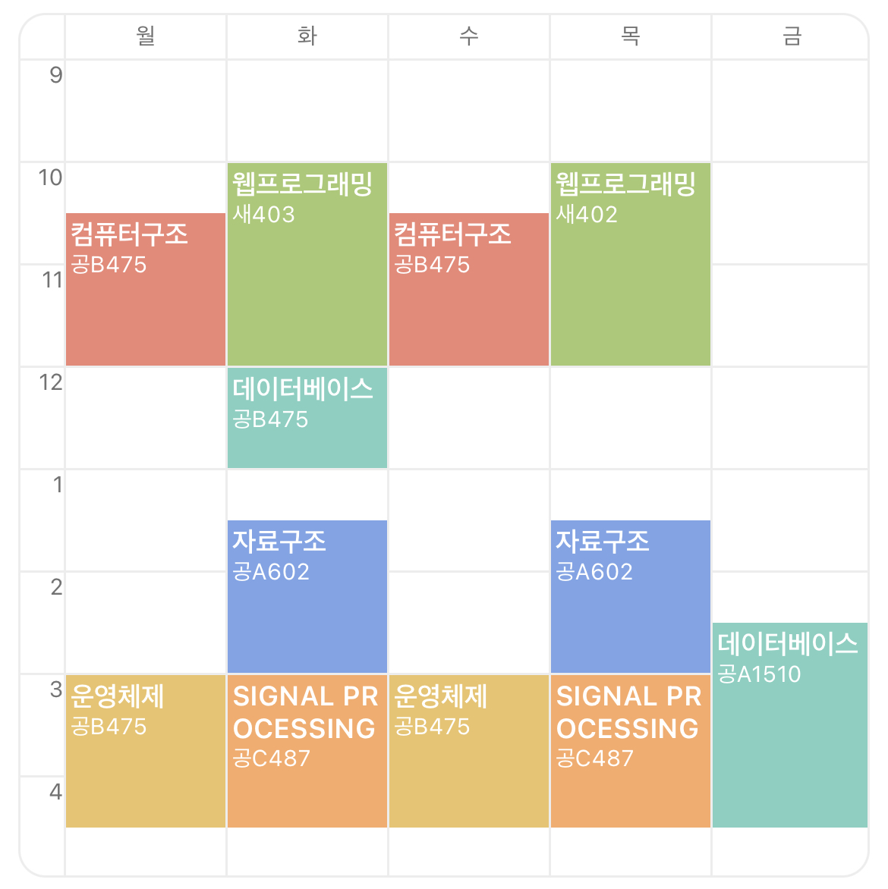Where I Live
How to go University?
ETS : 1H 20Min
파트너 소개
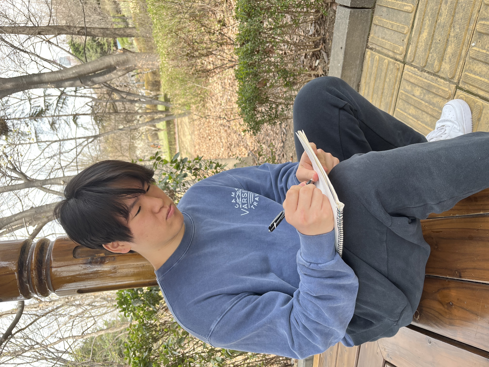About Him
학교: 건국대학교
학과: 컴퓨터공학부
이름: 박윤성
학번: 20학번
웹프 감상
HTML, CSS, JS같이 평소에 궁금해했던 주제에 대해 배우고 싶어
이 과목을 수강했는데, 웹 페이지의 내용 만들기부터
레이아웃을 디자인 하기 같은 것들을 체계적으로
배우니 재미 있습니다.
특히 웹페이지를 직접 만들 수 있다는 부분이 재미있는 것 같습니다
시간표
20문 20답
Q.이름, 학번, 학과
A.박윤성 20학번 컴퓨터공학부
Q. 나이는?
A.23살
Q.사는곳과 통학시간은?
A.경기도 판교, 1시간10분
Q.좋아하는음식은?
A.라면
Q.싫어하는 음식은?
A.버섯, 시금치
Q.좋아하는 색은?
A.흰색
Q.취미는?
A.야구시청
Q.본인의 장점은?
A.성격무난하다, 모난데 없다
Q.본인의 단점은?
A.게으르다
Q.10억이 생긴다면 어디에?
A.마당있는집 구매
Q.가장 좋았던 여행지는?
A.필리핀
Q.현재 가장 하고싶은것은?
A.누워서 잠자기
Q.좋아하는 계절과 이유는?
A.가을, 온도가 적당해서
Q.요즘 가장 관심있는것은?
A.학점, 학업
Q.가장 좋아하는 동물은?
A.강아지
Q.탕수육 찍먹 VS 부먹?
A.찍먹
Q.민트초코에 대해서 어떻게 생각하는지?
A.사회의 악이다
Q.본인이 생각하는건국대의 장점은?
A.놀곳이 많다
Q.몇살까지 살고싶은지? 이유는?
A.최대한 오래, 죽는게 무서워서
Q.좋아하는꽃은?
A.철쭉
A.박윤성 20학번 컴퓨터공학부
Q. 나이는?
A.23살
Q.사는곳과 통학시간은?
A.경기도 판교, 1시간10분
Q.좋아하는음식은?
A.라면
Q.싫어하는 음식은?
A.버섯, 시금치
Q.좋아하는 색은?
A.흰색
Q.취미는?
A.야구시청
Q.본인의 장점은?
A.성격무난하다, 모난데 없다
Q.본인의 단점은?
A.게으르다
Q.10억이 생긴다면 어디에?
A.마당있는집 구매
Q.가장 좋았던 여행지는?
A.필리핀
Q.현재 가장 하고싶은것은?
A.누워서 잠자기
Q.좋아하는 계절과 이유는?
A.가을, 온도가 적당해서
Q.요즘 가장 관심있는것은?
A.학점, 학업
Q.가장 좋아하는 동물은?
A.강아지
Q.탕수육 찍먹 VS 부먹?
A.찍먹
Q.민트초코에 대해서 어떻게 생각하는지?
A.사회의 악이다
Q.본인이 생각하는건국대의 장점은?
A.놀곳이 많다
Q.몇살까지 살고싶은지? 이유는?
A.최대한 오래, 죽는게 무서워서
Q.좋아하는꽃은?
A.철쭉
후기
오늘 같이 나올수 있어서 매우 즐거웠습니다
좋은 하루되세요 :)
좋은 하루되세요 :)
선정한 장소
남산야외식물원
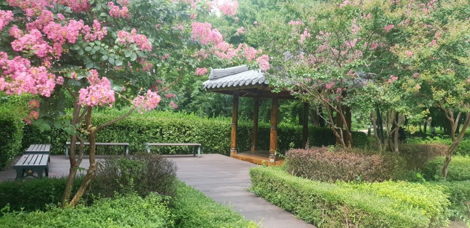
소개
선정 이유
일단 가장 우선적으로 본 것은 교통편이었다.
둘 다 경기도에 살기때문에 장소가 대중교통으로 방문하기에
용이해야했다.
다음으로는 코스의 난이도였는데, 우리는 서로 전형적인 컴공의
체력을 가지고 있었기 때문에
우리들에게 높은 난이도의
코스는 무리였다.
그래서 경사가 심하지 않고 길이 잘 닦여있는 곳으로 정하기로
하였다.
또한 봄이니 가능한 많은 종류의 꽃과 나무를 보고싶었다.
위치
준비물
물통 : 산책을 할때 필수품!! 무리해서 탈수에 걸리지 않게 합시다.
마스크 : 봄이되니 꽃가루와 미세먼지가 심해질 수 있습니다. 항상 조심!
수건 : 남산야외식물원에는 햇빛을 가려주는 나무가 별로 없어 땀이 많이날수 있습니다.
카메라 : 식물원에는 경치도 좋고 애완동물 등을 데려오는 사람들이 많으니 꼭 구비합시다!!
물통 : 산책을 할때 필수품!! 무리해서 탈수에 걸리지 않게 합시다.
마스크 : 봄이되니 꽃가루와 미세먼지가 심해질 수 있습니다. 항상 조심!
수건 : 남산야외식물원에는 햇빛을 가려주는 나무가 별로 없어 땀이 많이날수 있습니다.
카메라 : 식물원에는 경치도 좋고 애완동물 등을 데려오는 사람들이 많으니 꼭 구비합시다!!
주의사항!!
지도상에서는 마을, 상가가 매우 가까운 것 처럼 보이지만
소월로를 기점으로 절벽이기 때문에 상가로의 접근이 어렵습니다.
근처에 식사를 하거나 물건을 구매할곳이 없으니 물건을 미리 구비하고
도시락을 준비하시길 권고합니다
지도상에서는 마을, 상가가 매우 가까운 것 처럼 보이지만
소월로를 기점으로 절벽이기 때문에 상가로의 접근이 어렵습니다.
근처에 식사를 하거나 물건을 구매할곳이 없으니 물건을 미리 구비하고
도시락을 준비하시길 권고합니다
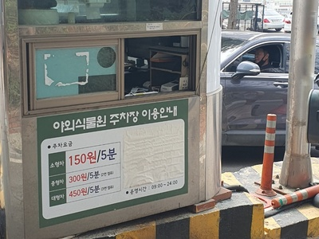
주차장
남산야외식물원에도 주차장이 있습니다.
걸어서 접근하기 힘든 위치에 있는만큼 많은 분들이 차량을 타고 갈것이라고 생각합니다.
하지만 주차장의 크기가 그렇게 크지 않습니다.
대략 30대정도 들어갈 수 있어 보입니다.
완전히 잎이 무성해지고나서는 방문객들이 더욱 많아질 것 으로 예상하므로 되도록 대중교통을 이용하여 방문하시기를 권합니다.
남산야외식물원에도 주차장이 있습니다.
걸어서 접근하기 힘든 위치에 있는만큼 많은 분들이 차량을 타고 갈것이라고 생각합니다.
하지만 주차장의 크기가 그렇게 크지 않습니다.
대략 30대정도 들어갈 수 있어 보입니다.
완전히 잎이 무성해지고나서는 방문객들이 더욱 많아질 것 으로 예상하므로 되도록 대중교통을 이용하여 방문하시기를 권합니다.
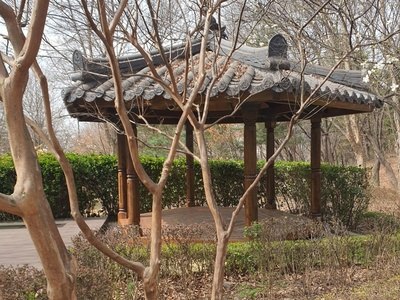
남산체육관 정류장에서 하차후 입구로 가면 이렇게 생긴 정자가
있습니다.
저희는 여기서 인터뷰를 진행하고 잡담을 조금 나누다가 출발하였습니다.
저희는 여기서 인터뷰를 진행하고 잡담을 조금 나누다가 출발하였습니다.
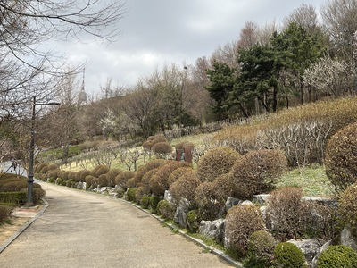
이후 안쪽으로 진행하다보면 이렇게
긴 길이 나오는데 쭉 따라가면서 양 옆을 구경하면 됩니다.
멀리서 남산서울타워가 보이는데 이게 또 엄청 멋있더군요
긴 길이 나오는데 쭉 따라가면서 양 옆을 구경하면 됩니다.
멀리서 남산서울타워가 보이는데 이게 또 엄청 멋있더군요
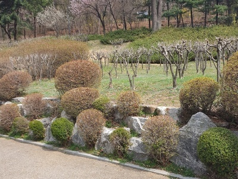
먼저 우측을 보면 아직 잎이 자라지 않은 나무들이 있는데
잎이없음에도 모아서보니 멋있습니다.
아쉽게도 펫말이 없어 나무의 이름을 알 수 없었습니다 ㅠㅠ
아쉽게도 펫말이 없어 나무의 이름을 알 수 없었습니다 ㅠㅠ
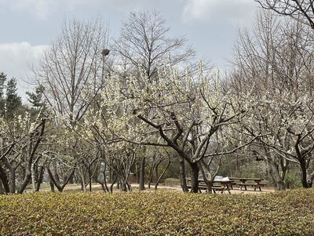
조금 전진하다 좌측을보면 다른 나무들이 있는데 여기는 꽃이
피어있어서 예쁩니다
안쪽에 테이블과 벤치가 있는데 여기앉아서
샌드위치먹으며 수다떨면 정말 좋을것 같습니다
안쪽에 테이블과 벤치가 있는데 여기앉아서
샌드위치먹으며 수다떨면 정말 좋을것 같습니다
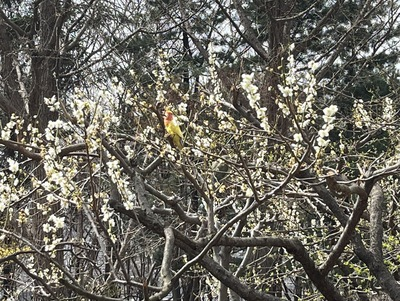
산책하다 나무쪽을 봤는데 이쁜 앵무새가 있어서 찍었습니다.
야생 앵무새인가 했는데 너무 이쁘고 관리가 잘 되어있는것을 보면 야생은 아닌것 같습니다.
그런데 저렇게 막 풀어놔도 도망가지는 않는걸까요? 신기하네요.
야생 앵무새인가 했는데 너무 이쁘고 관리가 잘 되어있는것을 보면 야생은 아닌것 같습니다.
그런데 저렇게 막 풀어놔도 도망가지는 않는걸까요? 신기하네요.
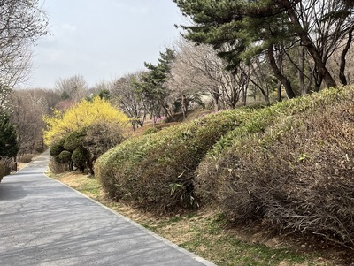
길따라 걷다보면 여러덤불이나 나무들이 보이는데 서로 다른종끼리
있으니 지루하지않고
볼거리가 많아서 참 좋더군요. 하늘도 맑아서 좋았습니다
볼거리가 많아서 참 좋더군요. 하늘도 맑아서 좋았습니다
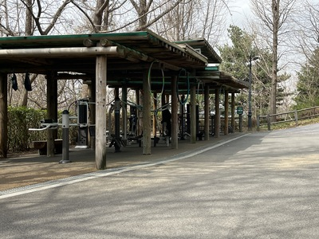
가다보면 세갈래길이 나오는데 다 이어져있습니다. 그래도 다
둘러보기 위해서는 좌측방향으로 가는것이 좋습니다. 좌측으로 가면
야외 체육시설이 있는데 야외에 있는 시설 치고는 상당히 관리가 잘
되어있습니다. 기회가 되면 방문해보는것도 좋을것 같습니다.
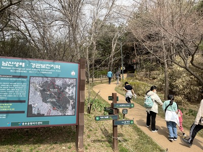
체육시설을 지나쳐 쭉 위쪽으로 올라가면 남측사면 소나무숲으로
가는 길이 나 있습니다.
위쪽으로 올라오니 등산객들을 많이 만날수 있었습니다.
위쪽으로 올라오니 등산객들을 많이 만날수 있었습니다.
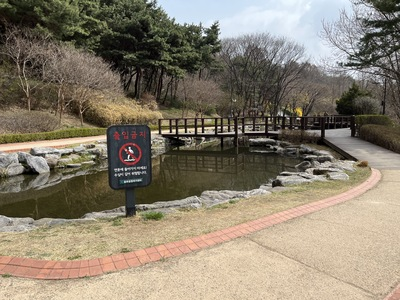
그 후 우측으로 가면 연못이 있습니다.
이 연못에는 붕어같은 물고기들이 살고있습니다. 여름에는 수중식물들이 잔뜩 자라있는 모양이니 여름에 방문하면 훨씬 화려한 호수를 볼 수 있습니다.
이 연못에는 붕어같은 물고기들이 살고있습니다. 여름에는 수중식물들이 잔뜩 자라있는 모양이니 여름에 방문하면 훨씬 화려한 호수를 볼 수 있습니다.
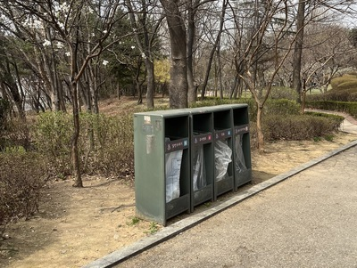
쭉 돌아서 가면 들어왔던 입구쪽으로 다시 갈 수 있습니다.
쓰레기통이 있으니 산책을 한 후에 마신 물이나 간식쓰레기가 있으면 이 쓰레기통에 버리시고 나가시면 됩니다.
쓰레기통이 있으니 산책을 한 후에 마신 물이나 간식쓰레기가 있으면 이 쓰레기통에 버리시고 나가시면 됩니다.